In this lab, we will create a custom Slack command that queries Google's Knowledge Graph API on demand through the use of Cloud Functions. The flow is shown below.
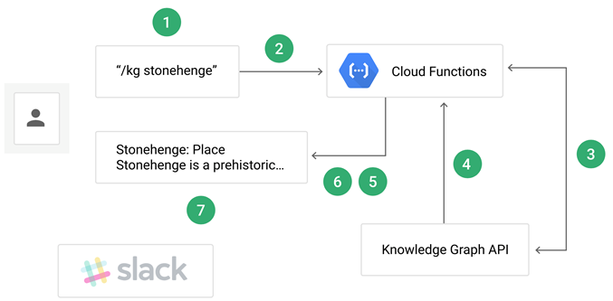
- User executes the
/kgSlash Command in your Slack workspace. - Slack app configured to handle
/kgcommands sends the command payload to the Cloud Function's HTTP trigger endpoint along with its verification token - Cloud Function verifies token, then sends a request with the user's search query to the Knowledge Graph API along with an API key.
- Knowledge Graph API performs query and returns a matching result
- Cloud Function formats the response for Slack
- Cloud Function sends it back to Slack workspace.
- The user sees the formatted response in the Slack channel.
To begin with, launch a Google Cloud Shell and clone the repository and change into the source directory.
git clone https://github.com/GoogleCloudPlatform/python-docs-samples.git cd python-docs-samples/functions/slack/
The Cloud Function endpoint (kg_search) will implement a REST API that supports query via POST with the query payload (text) delivered in a JSON object. The request will be similar to the invocation below:
curl -X POST \
"https://YOUR_REGION-YOUR_PROJECT_ID.cloudfunctions.net/kg_search" \
-H "Content-Type: application/json" \
--data '{"text":"portlandia"}'
The function is implemented again in main.py. The function begins by importing its packages. It uses the os package to read our Slack secret (SLACK_SECRET) and Knowledge Graph API key (KG_API_KEY). It also imports a Slack package used to verify signatures used in Slack authentication. Finally, it imports the generic API Discovery package to access the backend Knowledge Graph API.
main.py
import os
from flask import jsonify
import googleapiclient.discovery
from slack.signature import SignatureVerifierThe API will be instantiated using the line below.
kgsearch = googleapiclient.discovery.build(
'kgsearch',
'v1',
developerKey=os.environ['KG_API_KEY'],
cache_discovery=False)Consider the difference between how the API access is done from before. Specifically, recall that the Vision API lab used its own Python package since one exists for it. In this lab, the generic API Discovery package is used since it is able to instantiate a Pythonic interface to any backend API. Answer the following question for your lab notebook:
- Could we have used the API Discovery package to interact with the Vision API?
- Does Google provide a Python package specifically for accessing the Knowledge Graph API?
The function that implements our Cloud Function is kg_search. Because we only want requests from our own Slack workspace to be able to issue queries to the Knowledge Graph API, we require that a shared secret be established between our Google Cloud project and the Slack workspace that can be used to sign and verify requests. The code first validates the method is POST and that the request is valid via verify_signature. If valid, it then performs the query on Knowledge Graph via make_search_request, passing along the text parameter of the form as the search term. It then returns the results formatted in JSON.
main.py
def kg_search(request):
if request.method != 'POST':
return 'Only POST requests are accepted', 405
verify_signature(request)
kg_search_response = make_search_request(request.form['text'])
return jsonify(kg_search_response)The code for checking the validity of the request (verify_signature) is shown below
def verify_signature(request):
request.get_data() # Decodes received requests into request.data
verifier = SignatureVerifier(os.environ['SLACK_SECRET'])
if not verifier.is_valid_request(request.data, request.headers):
raise ValueError('Invalid request/credentials.')As the code shows, it obtains the SLACK_SECRET from the environment variables and uses it to verify the request signature is correct, thus authenticating the client request.
The code for using kgsearch, the API object returned by the API Discovery package, to issue a search request to Knowledge Graph is implemented in make_search_request().
Visit the file and perform the following for your lab notebook:
- Show the source line that constructs the query we wish to send to the Knowledge Graph API.
- Show the source line that then executes the query and saves the response. What is the name of the method that sends the query to the Knowledge Graph API?
Upon receiving a response from the Knowledge Graph API, it is formatted using the function format_slack_message() in order to pass it back to the Slack workspace.
Visit the file and answer the following questions:
- What is the Python data type that is used to represent the formatted message?
- What are the three main attributes of the formatted message passed back to Slack?
We must first enable and configure our project's Knowledge Graph API, then issue an API key that will authenticate requests from our Slack workspace to the API.
Option #1: Web UI
From the web console, visit "APIs & Services" and search for Knowledge Graph. Enable the API.
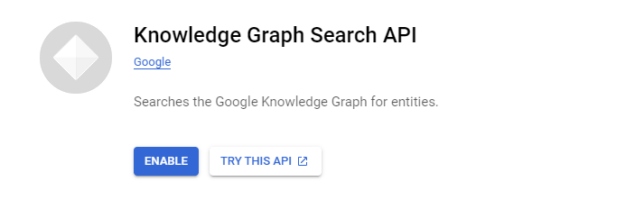
Visit the "Credentials" subsection of "APIs & Services" and create a new "API key" credential:
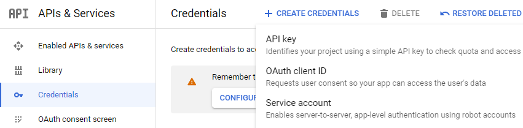
Then, edit the API key's permissions to add restrictions to only allow access to Knowledge Graph.
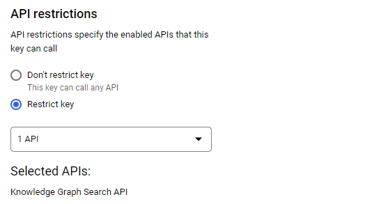
Then, copy the key that has been created. It will subsequently be referred to as YOUR_KG_API_KEY.
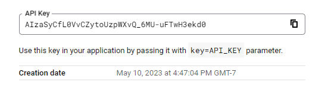
Option #2: Cloud Shell
To do so in Cloud Shell, enable the service:
gcloud services enable kgsearch.googleapis.comThen, generate the key with restrictions limiting it to Knowledge Graph..
gcloud alpha services api-keys create \
--display-name="KG API Key" \
--api-target=service=kgsearch.googleapis.comIn the output for the command, the keyString field returns the API key (YOUR_KG_API_KEY).
You will need your own Slack workspace that you are the administrator of.
- Create one at https://slack.com/create, unless you have one of your own already.
- Then, create a Slack App at https://api.slack.com/apps and associate it with your workspace. The application you create will handle the
/kgsubcommand.

- Obtain the Slack App's signing secret, this secret is used to sign requests from our Slack application that are triggered via the Slack sub-command our application will implement. The signed request is then sent to our Cloud Function and the signature will be verified within it. In "Basic Information", scroll down to "App Credentials", click "Show" to show the secret, copy it, and save it. It will subsequently be referred to as
YOUR_SLACK_SIGNING_SECRET. Knowledge of this will authenticate you to your Slack workspace.

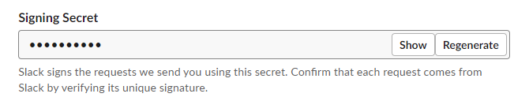
Keep this Slack App configuration page up.
Then, in Cloud Shell, deploy the code substituting YOUR_SLACK_SIGNING_SECRET and YOUR_KG_API_KEY in:
gcloud functions deploy kg_search \ --runtime python37 \ --trigger-http \ --set-env-vars "SLACK_SECRET=YOUR_SLACK_SIGNING_SECRET,KG_API_KEY=YOUR_KG_API_KEY" \ --allow-unauthenticated
Note the URL of the function endpoint.
Go back to your Slack App configuration page. Go to "Slash Commands" and click on "Create New Command".
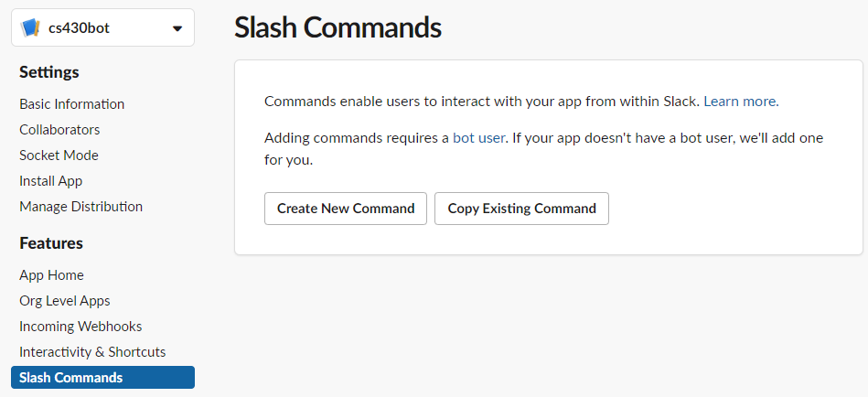
Configure command by setting /kg as the name. Copy the Cloud Function's URL endpoint from the previous step (e.g. https://[YOUR_REGION]-[YOUR_PROJECT_ID].cloudfunctions.net/kg_search) and paste it into the "Request URL". Save the command.
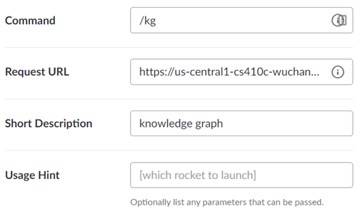
Install the App into your workspace, granting its permissions to perform actions on it:
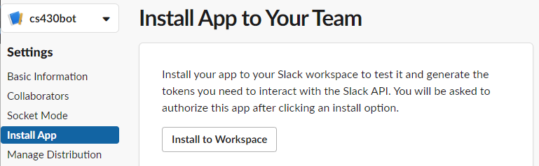
Go to your Slack workspace and join a channel. Within the text box, enter the following search.
/kg chatgpt
- Take a screenshot of its response for your lab notebook.
You should get an output similar to below (if not, see the rest of the step for debugging).
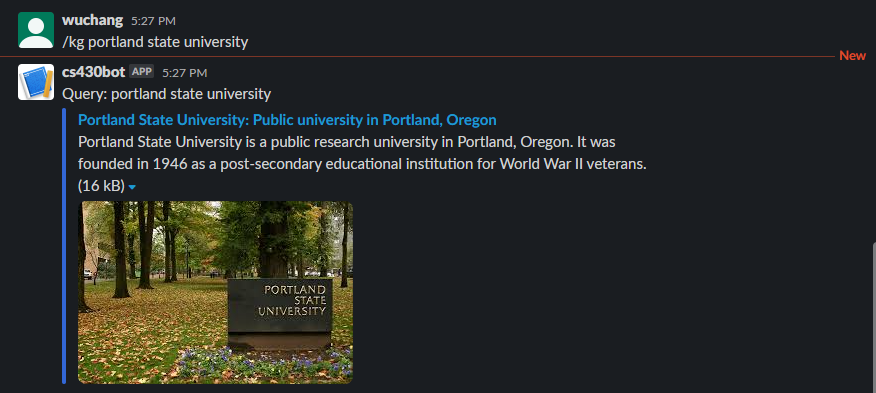
Visit Cloud Shell and examine the logs for the function to see the processing steps that have occurred. This can be a valuable source of debugging information if your command above did not work.
gcloud functions logs read --limit 5
You can also visit the logs of your specific cloud function in the web console.
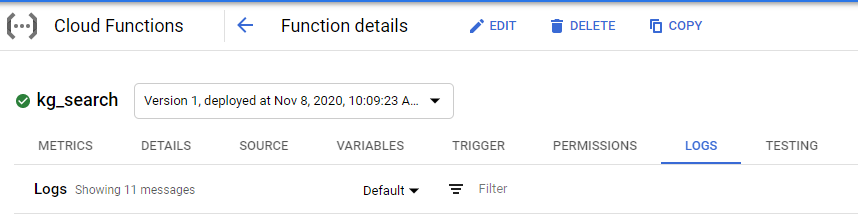
Upon completion, delete the function either via the web console or via command-line:
gcloud functions delete kg_search